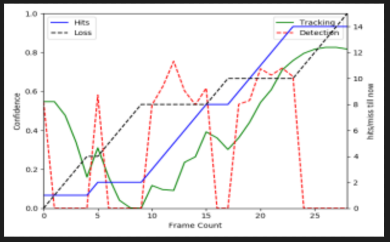

Discussion on similar and relevant algorithms
Introduction:
Most of the conventional detection and tracking algorithms/systems for moving objects includes preprocessing, background subtraction (which includes dynamic background modeling), detection foreground object(s) (especially the moving objects), post-processing, and tracking (with foreground boundary/mask) [1]. The tracking process is achieved by using a combination of spatial and temporal information about the moving object. The underlying algorithm decides about the movement of an object based on the spatial and temporal coherency. However, the process of background modeling is quite challenging due to the factors like dynamic background, variation in illuminations, change in the scene, mis-classification of shadow as an object, camouflage and bootstrapping problems [2,3] etc. Moreover, background subtraction is quite useful for a video from a static camera but, delays the operation of object tracking in a video of dynamic background. Therefore, recent trends avoid the background-subtraction step and use machine learning approaches for detection, classification and tracking of moving objects.
An input image is most often pre-processed for normalizing contrast and brightness effects [4]. A very common preprocessing step is to subtract the mean of image intensities and divide by the standard deviation. Sometimes, gamma correction produces slightly better results. On the other hand, a color space transformation (e.g. RGB to LAB color space) may help to get better results while dealing with color images. Finally, as part of pre-processing, an input image or patch of an image is also cropped and resized to a fixed size. This is essential for the next step, i.e. feature extraction, which requires a fixed sized image for its operation. However, one may remember that it is hard to predict a particular pre-processing algorithm that best suits a typical application. Fortunately, the good thing is that the choice of the pre-processing algorithm affects minimally in the results, and slight betterment in the result can only be obtained with a heuristic choice of the algorithm.
The preprocessing step is followed by the Feature Extraction. Actually, the input image contains much extra information that is not necessary for classification. Therefore, prior to image classification, the target image is simplified by extracting the important information contained in the image and leaving out the rest. For example, if one wants to find the shirt and coat buttons in images, he/she will notice a significant variation in RGB pixel values. However, the image can be simplified by running an edge detector on the image. It is still easily possible to discern the circular shape of the buttons in these edge images. Therefore, it can be concluded that edge detection retains the essential information while throwing away non-essential information. However, designing these features is crucial to the performance of the algorithm in a traditional computer vision approaches. Actually, a much better performance can be achieved finding much more reliable features than the simple edge detection. In the example of shirt and coat buttons, a good feature detector will not only capture the circular shape of the buttons but also gather information about how buttons are different from other circular objects like car tires. Some well-known features used in computer vision are Haar-like features (introduced by Viola and Jones) [5], Histogram of Oriented Gradients (HOG) [6,7], Scale-Invariant Feature Transform (SIFT) [8,9], Speeded Up Robust Feature (SURF) [10] etc.
Now, after converting an image to a corresponding feature vector, classification algorithm takes this feature vector as input and outputs a class label. However, these classification algorithms are required to be trained before it can actually determine the classes of the objects. The algorithms need to be trained by showing thousands of examples of images from different target and known classes. Different learning algorithms learn differently, but the general principle is that the learning algorithms treat feature vectors as points in higher dimensional space, and try to find planes / surfaces that partition the higher dimensional space in such a way that all examples belonging to the same class are on one side of the plane / surface.
The classification algorithms/classifiers are majorly clustered in - Linear classifier, Quadratic classifier, Bayesian classifier, Neural Network, Kernel estimation and k-nearest neighbor, Decision Trees, Support Vector Machines, Maximum Entropy Classifier etc. Among these algorithms, the mostly cultured classifier is the Neural Network based classifier.
Now, an object detection and classification system takes a classifier for an object of interest and evaluates it at various locations and scales in a test image. Different systems use a sliding window approach where the classifier is run at evenly spaced locations over the entire image. On the other hand, the popular R-CNN use region proposal methods to, first, generate potential bounding boxes in an image and then run a classifier on these proposed boxes [11]. After classification, post-processing is used to refine the bounding box, eliminate duplicate detections, and rescore the box based on other objects in the scene. However, these complex pipelines are slow and hard to optimize because each individual component must be trained separately. To resolve this limitation, some new algorithms like YOLO [11] has been proposed which trains the classifier to find multiple objects in a single frame in one go. The algorithm has proved its potentiality in terms of speed and accuracy.
Nevertheless, in spite of these long sustained researches in this field, there still exists a significant probability of false-detection and missed-detection when the object is detected in a single frame. This is because; the current autonomous unmanned aerial platforms simply implement a passive object detection running on the live camera images [12]. On the other hand, Humans lingers its gaze in an object until it is detected properly [13]. The gaze tries to obtain a temporal continuity between the consecutive frames while the object is in motion. Otherwise, the continuity is obtained by moving our gaze around the object to collect more features about it. This work gathers inspiration from the above mentioned behavior which occurs naturally across humans, birds and most animals. Some strategies have also been proposed in the same direction [14], but they yet required to be improved further for real-time implementation. Temporal verification of object in continuous videos is required to improve the accuracy or confidence of detection. Temporal consistency dictionary learning may also be incorporated further in improvement of the tracking algorithm [15]. Multiple frame may be captured by the platform by maneuvering it in a straight line forward motion (dolly), or sideways motion (truck), or up-down motion (pedestal); and their correlation may be utilized to enhance the confidence, and hence to improve the accuracy in detection [16-19] as well as tracking [20,21].
References:
[1] Bahadir Karasulu and Serdar Korukoglu,.: Springer, 2013, ch. 2, pp. 7-30.
[2] B. Ahn, "Real-time video object recognition using convolutional neural network," , 2015, pp. 1-7.
[3] J. S. Kulchandani and K. J. Dangarwala, "Moving object detection: Review of recent research trends," , 2015, pp. 1-5.
[4] SATYA MALLICK. (2016, November) http://www.learnopencv.com. [Online]. http://www.learnopencv.com/image-recognition-and-object-detection-part1/
[5] P. Viola and M. Jones, "Rapid object detection using a boosted cascade of simple features," , vol. 1, 2001, pp. I-511-I-518 vol.1.
[6] N. Dalal and B. Triggs, "Histograms of oriented gradients for human detection," , vol. 1, 2005, pp. 886-893 vol. 1.
[7] R.K. McConnell, Method of and apparatus for pattern recognition, 1986, US Patent 4,567,610.
[8] D. G. Lowe, "Object recognition from local scale-invariant features," , vol. 2, 1999, pp. 1150-1157 vol.2.
[9] D.G. Lowe, Method and apparatus for identifying scale invariant features in an image and use of same for locating an object in an image, 2004, US Patent 6,711,293.
[10] Herbert Bay, Andreas Ess, Tinne Tuytelaars, and Luc Van Gool, "Speeded-Up Robust Features (SURF)," Computer Vision and Image Understanding, vol. 110, pp. 346-359, 2008, Similarity Matching in Computer Vision and Multimedia.
[11] Joseph Redmon, Santosh Kumar Divvala, Ross B. Girshick, and Ali Farhadi, "You Only Look Once: Unified, Real-Time Object Detection," CoRR, vol. abs/1506.02640, 2015.
[12] Z. He et al., "Ard-μ-Copter: A Simple Open Source Quadcopter Platform," , 2015, pp. 158-164.
[13] Kiwon Yun, Yifan Peng, Dimitris Samaras, Gregory Zelinsky, and Tamara Berg, "Exploring the role of gaze behavior and object detection in scene understanding," Frontiers in Psychology, vol. 4, p. 917, 2013.
[14] B.V.K.V. Kumar, A. Mahalanobis, and R.D. Juday, Correlation Pattern Recognition.: Cambridge University Press, 2010.
[15] X. Cheng, Y. Zhang, J. Cui, and L. Zhou, "Object Tracking via Temporal Consistency Dictionary Learning," IEEE Transactions on Systems, Man, and Cybernetics: Systems, vol. 47, pp. 628-638, 2017.
[16] R. Kerekes and B. V. K., "Enhanced Video-Based Target Detection using Multi-Frame Correlation Filtering," IEEE Transactions on Aerospace and Electronic Systems, vol. 45, pp. 289-307, 2009.
[17] R. Feris, A. Datta, S. Pankanti, and M. T. Sun, "Boosting object detection performance in crowded surveillance videos," 2013, pp. 427-432.
[18] Michael Horton, Mike Cameron-Jones, and Raymond Williams, "Multiple Classifier Object Detection with Confidence Measures," in AI 2007: Advances in Artificial Intelligence: 20th Australian Joint Conference on Artificial Intelligence, Gold Coast, Australia, December 2-6, 2007. Proceedings, Mehmet A. Orgun and John Thornton, Eds.: Springer Berlin Heidelberg, 2007, pp. 559-568.
[19] E. N. Mortensen and W. A. Barrett, "A confidence measure for boundary detection and object selection," vol. 1, 2001, pp. I-477-I-484 vol.1.
[20] L. Dong, I. Zoghlami, and S. C. Schwartz, "Object Tracking in Compressed Video with Confidence Measures," 2006, pp. 753-756.
[21] B. Zhang et al., "Adaptive Local Movement Modeling for Robust Object Tracking," IEEE Transactions on Circuits and Systems for Video Technology, vol. 27, pp. 1515-1526, 2017.
In this work, object detection has been implemented using the well-known You-Only-Look-Once (YOLO) algorithm. Like most other deep-neural-network based detection algorithms, the YOLO algorithm detects objects in an image frame. This excludes the possibility to relate the temporal information of an object with its detection confidence. On the other hand, a conventional tracking algorithm cannot detect an object, but is able to relate the present position of an arbitrary object with its previous position. Therefore; fusion of YOLO with a tracking algorithm, e.g. Kalman Filter based tracking, is made in this work to improve the detection confidence of an object.
Most of the existing object detection and tracking algorithms that are present today for ready to use does not associate the temporal information of the object with its detection congidence. In this work, the temporal imformation of the object has been associated to improve the confidence of the object. In other words, machine ability to identify an object has been enhanced through countinous gazing to the object and thus building up the confidence to indentify the object particularly in low light condition .
The formula that is proposed here uses the confidences of an detected object and
assign it to a tracker for the object. Then the confidences of the successive
detections have been associated with the tracker confidence through the propose
formula.
The formula will be made public after publication of confrence paper
Experiments that are carried on the various lighting conditions have shown the expected results.
To illustrate the result let’s take the graph of an object’s tracker and detected confidence

The improved confidence /build up confidence of object is equivalent to the confidence of the tracker .
From frame 0 to 10 the confidence of tracker is falling as the number of losses is increasing this is analogous to the situation where human first think that a object is “X” with confidence of almost 0.5 then next moment is he/she think that object is another object “Y” due to the unabilty to track the object movement in low lighting condition or because of other reason.
From frame 10 to 25 tracker confidence starts rising as hits is increasing this is analogus to the situation where a human starts to identify an object to be “X” continuously but with low confidence may be due to lighting condition or due to any other factors and after continuous gazing he is able to identify the object with almost 100% of confidence.
Task has been successfully completed by implementing the
proposed formula in different situations and getting the desired result.
• software prerequisites
• Python 3
• Open CV
For GPU compatibility
• CUDA and CUDNN
• darknet
A better tracking algorithim can be adopted to improve accuracy of the proposed algorithm. However, this is subjected to the trade-off of time complexity/frame rate of the algorithm.
A better detection algorithim can be used to detect to the object in low lightling condition.
An exhausive trining of the detection algorithm is required for currectly detecting objects in an aerial image.
Final demonstration has been given to DRDO, preparing confrence paper